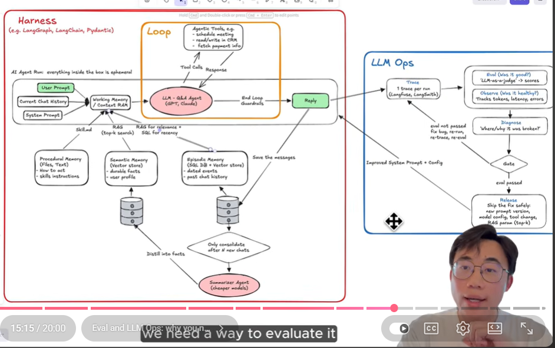

The core idea
The video frames four buzzwords as one architecture: harness, loop engineering, evals, and LLM Ops are simple control systems around a probabilistic model.
Build the agent as a controlled loop, persist only the right memories, instrument every run, evaluate outputs and trajectories, diagnose failures, and release prompt/model/tool/RAG changes through gates.
Harness
Runtime control: prompt assembly, working memory, durable memory retrieval, tool permissions, loop execution, and stop conditions. The transcript compares it to controlling a powerful horse.
Loop engineering
The repeated think-call-observe cycle that lets an agent use tools until the task is done. Its main risk is not knowing when to stop.
LLM Ops
The outer improvement loop: trace each run, evaluate quality, observe health, diagnose root cause, and release safer prompt/config/tool/retrieval changes.
Two loops, one system
Click any node. The left lane is the agent runtime; the right lane is the production improvement loop.
Harness inner loop
LLM Ops outer loop
User prompt
The run starts with what the user asks now, plus current chat history and the system prompt. The transcript stresses that this run is ephemeral: the context exists for the run, then disappears unless deliberately saved.
Memory is not one thing
The transcript separates how-to instructions, durable facts, and dated events. The harness should store and retrieve them differently.
| Question | Answer | Design implication |
|---|---|---|
| What is it? | How the agent should act: skills, rules, operating instructions, tool usage policy. | Keep it explicit and versioned as files, not buried in vague prompts. |
| Source basis | The video describes procedural memory as files/text and "skills instructions." | Use `SKILL.md`, repo rules, system prompts, and acceptance criteria. |
| Question | Answer | Design implication |
|---|---|---|
| What is it? | Durable facts: user profile, project facts, business facts, stable preferences. | Retrieve by topical relevance, usually via embeddings/vector search plus metadata filters. |
| Source basis | The video uses facts about who Sean is and what he built as the semantic-memory example. | Write stable facts only after validation; avoid turning transient chat noise into durable truth. |
| Question | Answer | Design implication |
|---|---|---|
| What is it? | Past events, conversation history, triggers, and dated interactions. | Use a time-indexed store. Combine SQL for recency with semantic search for meaning. |
| Source basis | The video calls episodic memory a time series and contrasts recent-conversation SQL lookup with complaint-pattern semantic lookup. | Store event rows separately from distilled facts. Keep timestamps and provenance. |
Why a summarizer agent exists
The transcript says memory does not appear from nowhere; messages should be saved, then periodically consolidated into faster, more useful semantic memory. A cheaper model may be appropriate when processing large volumes.
What should be written where
Raw transcripts go to archive or episodic memory. Stable extracted facts go to semantic memory. How-to rules go to procedural memory. Temporary task state stays in working memory only.
The agent loop
A loop is not a buzzword for "the model thinks." It is the harness-controlled cycle of action, observation, and termination.
Assemble context
Collect the user request, chat history, system prompt, retrieved memory, and prior tool observations into working memory.
Choose the next action
The LLM proposes whether to answer, retrieve more, call a tool, clarify, or stop.
Authorize the action
The harness checks permissions, risk, budget, schema, and whether human approval is required.
Call the tool and observe
The result is added back to the working state. The transcript examples include CRM reads/writes, scheduling, and payment/refund tools.
Stop or continue
End-loop guardrails decide whether the task is complete, unsafe, blocked, over budget, or awaiting user input.
LLM Ops is the outer control loop
The right-side system in the diagram exists because a harness can run and still be bad, slow, expensive, unsafe, or unreproducible.
Record every run
Log prompt versions, retrieved memories, tool calls, tool outputs, final answer, errors, latency, token use, and cost.
Score quality
Use deterministic checks where possible and LLM-as-judge where judgment is needed. Score trajectories, not just final prose.
Check health
Track latency, tokens, costs, failed tools, retries, context size, retrieval count, and loop length.
Find what broke
Was the system prompt wrong? Did retrieval miss? Was working memory too large? Did a tool time out? Did the agent use the wrong tool? Did the evaluator approve a bad answer?
Ship only passing changes
A release can be a new prompt, model config, tool schema, memory rule, or RAG parameter. If the eval does not pass, rerun, retrace, and reevaluate before shipping.
Failure diagnosis
Use these as starting hypotheses when a run looks wrong in the trace or metrics.
Minimal buildable harness
A solo developer does not need enterprise infrastructure. Start with explicit files, local traces, a small eval suite, and release gates.
Suggested project skeleton
agent-harness/
ai/
project_brief.md
architecture.md
rules.md
acceptance_criteria.md
skills/
research/SKILL.md
coding/SKILL.md
memory/
semantic.jsonl
episodic.sqlite
evals/
golden_cases.jsonl
rubrics/
traces/
runs.jsonl
src/
context_assembler.py
agent_loop.py
tools.py
permissions.py
evaluator.py
release_gate.pySource notes
This artifact was reconstructed from the local source pack in the workspace.

Text source: `transcript.txt`
Raw YouTube transcript for Sean's tutorial. Key timestamps are cited throughout the page.
Text source: `gpt5.5_summary.txt`
Prior reconstructed tutorial from the diagram. I used it as a cross-check for diagram labels, structure, and the practical build framing.
Reconstruction boundary
The transcript gives the spoken explanation; the summary captures detailed diagram labels. The practical skeleton and failure matrix are synthesized from those source claims rather than direct quotes.